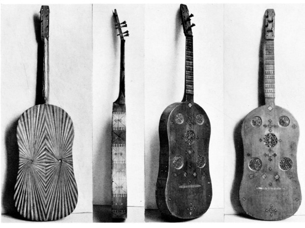
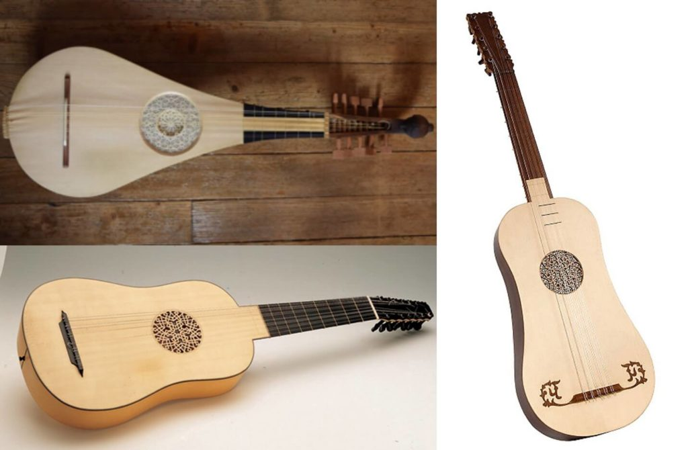
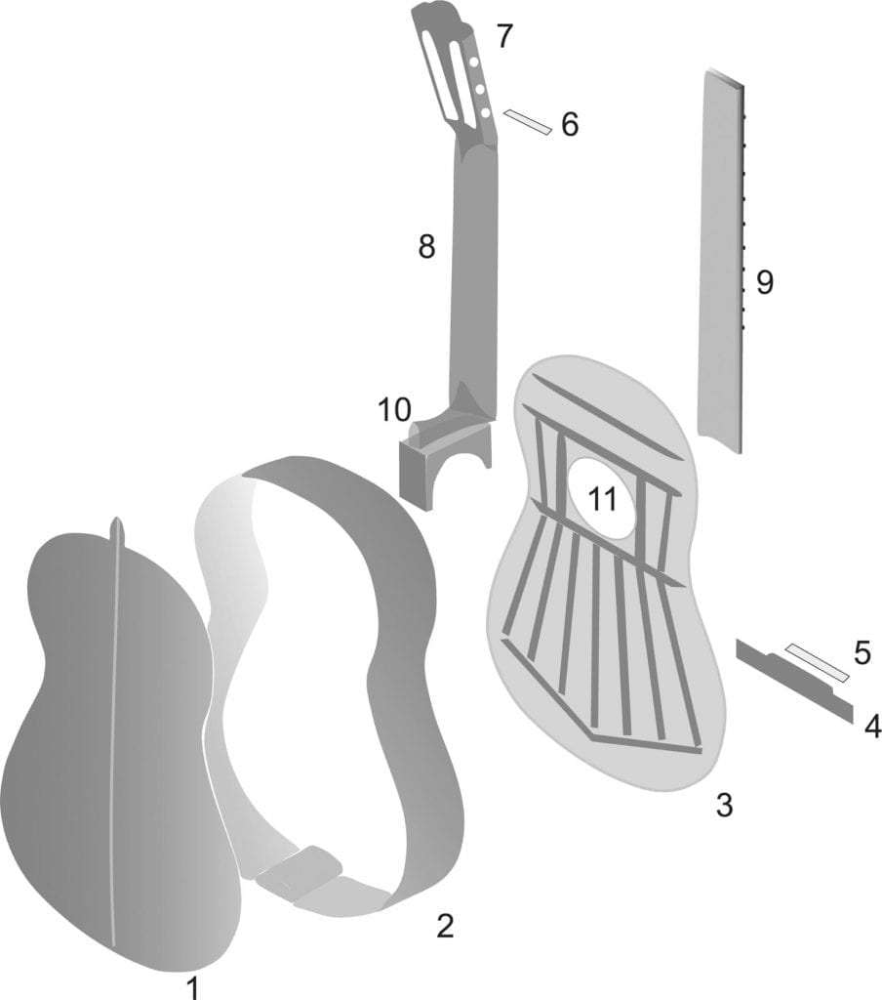
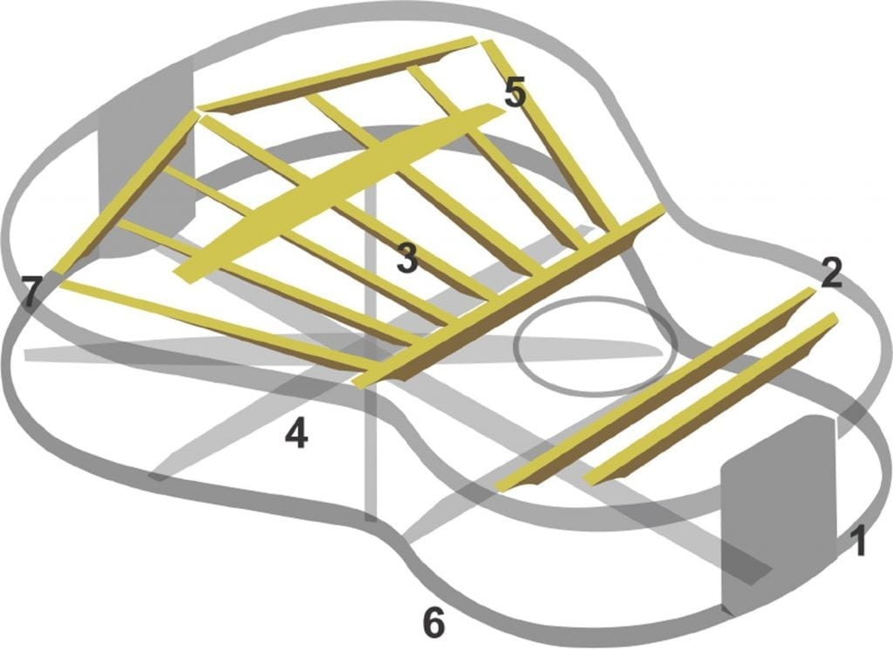

Antes de começar a discorrer sobre o meu contato com a música através deste instrumento e de outros de cordas, como a guitarra e o contrabaixo elétrico, farei um breve resumo sobre a história do violão de seis cordas, que conhecemos hoje, além de como seu som é emitido e a estrutura.
O violão é um instrumento musical da família dos cordófonos que possui seis ordens de cordas simples, cujo corpo acústico lembra o formato de número oito. A história do violão como o conhecemos data de alguns séculos, a referência mais antiga a uma guitarra de seis cordas aparece em um anúncio de venda de um jornal de Madri do ano de 1760, mencionada como vihuela, palavra usada como sinônimo de guitarra na linguagem espanhola do século XVII em diante.
A guitarra mais antiga, com mais de cinco ordens simples que ainda se mantém preservada, é a de Francisco Sanguineo, que foi construída em Sevilha, Espanha, no ano de 1759. Uma vez que este instrumento foi modificado, não se pode afirmar o seu número exato de cordas, porém sabe-se que eram no mínimo seis. Esse antepassado do violão possuía um comprimento de corda vibrante de 670mm e, uma estrutura interna no seu tampo, em forma de um leque harmônico simples, o qual era constituído por três barras de madeira dispostas longitudinalmente.
Em 1832, Louis Panormo construiu um instrumento muito próximo ao que conhecemos hoje como violão clássico, embora seja menor e tenha uma cintura mais acentuada. Em 1859, o luthier espanhol Antonio de Torres Jurado criou o instrumento que atualmente acabou definindo a história do violão e tornou-se o violão clássico. As principais modificações introduzidas por Torres foram: aumento do tamanho da caixa acústica, modificações das proporções, modificações do reforço interno do tampo em forma de leque (com sete barras longitudinais dispostas simetricamente) e a definição do comprimento de escala em 650 mm.
Essa combinação de modificações fez o violão ganhar mais adeptos, tendo em vista que a sua capacidade de projeção sonora aumentou consideravelmente, o que fez com que o instrumento “Torres” passasse a ser considerado o modelo padrão do violão moderno. No entanto, como se nota, a pergunta “quem inventou o violão” não tem uma resposta, uma vez que o desenvolvimento do instrumento foi cumulativo.
Mesmo o violão sendo um instrumento amplamente inserido na cultura musical brasileira, apenas algumas obras discutem a sua importância na identidade e cultura nacional. Este artigo, também não vai abarcar todas as abordagens ou temáticas envolvendo física e ensino através do violão, mas dará ao leitor algumas outras possibilidades de conhecer o funcionamento do violão, através de uma descrição do instrumento a partir da Física e da Luthieria combinadas.
 O instrumento possui seis ordens de cordas simples com comprimento acústico de 65cm entre a pestana e o rastilho, afinadas geralmente nas notas mi2, lá2, ré3, sol3, si3 e mi4 com frequências de 82 Hz, 110 Hz, 147 Hz, 196 Hz, 247 Hz e 330 Hz, respectivamente, usando como referência o diapasão de 440 Hz, além de outras afinações possíveis, é claro. Trata-se de um instrumento versátil pois, pela quantidade de cordas, suas notas e disposições, permite tanto a execução da melodia, da harmonia ou de ambas em peças mais elaboradas. Durante o desenvolvimento do violão algumas variações foram construídas. Ainda hoje existem algumas variantes do violão e, apesar das diferenças, o elementos constituintes destes instrumentos são os mesmos, salvo alterações e detalhes característicos de cada um.
As principais partes do violão são mostradas nas FIGURAS 1 e 2. De maneira geral, o corpo do violão transforma a onda transversal da corda em uma onda longitudinal irradiada pelo instrumento, através do ar, até o ouvinte.
Para que isso ocorra, são necessárias inúmeras partes com funções e ações bem definidas, começando pelo elemento gerador de som: as cordas, que podem ser de nylon ou aço (podendo ocorrer somente com cordas de nylon ou de aço, ou ainda, ambas em conjunto em um mesmo instrumento), que aplicam uma tensão considerável no instrumento, mais de 500N (equivalente a quase 51Kgf).
Figura 1: Visão explodida do violão sem as cordas
Figura 2: Visão da estrutura interna do violão na ausência do tampo, fundo e laterais.
O leque da estrutura em questão é o modelo Torres.
Bom, após todo essa pesquisa sobre o meu querido instrumento, iniciarei, finalmente, um texto falando sobre o processo de descobrimento do meu vício pela música.
Resumindo, há um violão antigo aqui em casa que foi de meu bisavô paterno, que "arranhava" seu violão e se divertia compondo. Então, quando percebeu que apenas meu pai que se interessava, passou para ele. O pai até toca, mas nunca quis seguir o ramo musical e evoluir suas habilidades, então deixou o instrumento pendurado na parede.
O meu primeiro contato ocorreu quando tinha por volta dos 2 anos, época em que pai tocava para mim, eu me divertia muito. Com o passar dos anos, mais precisamente em 2020, veio em meu coração o desejo de aprender a tocar este instrumento pois despertou-me o desejo de reproduzir músicas que escutava (escuto ainda). Fui treinando em casa, mal percebi e já consegui fazer um acorde, desenvolver o ritmo da mão direita, mas não 100%. Assim decidi fazer aulas. Por 1 ano fiz. Segui aprendendo sozinho e com ajuda de outros, sempre explorando a música, e continuo praticando. É um sentimento complexo e mágico. Uma das melhores descobertas de minha vida.